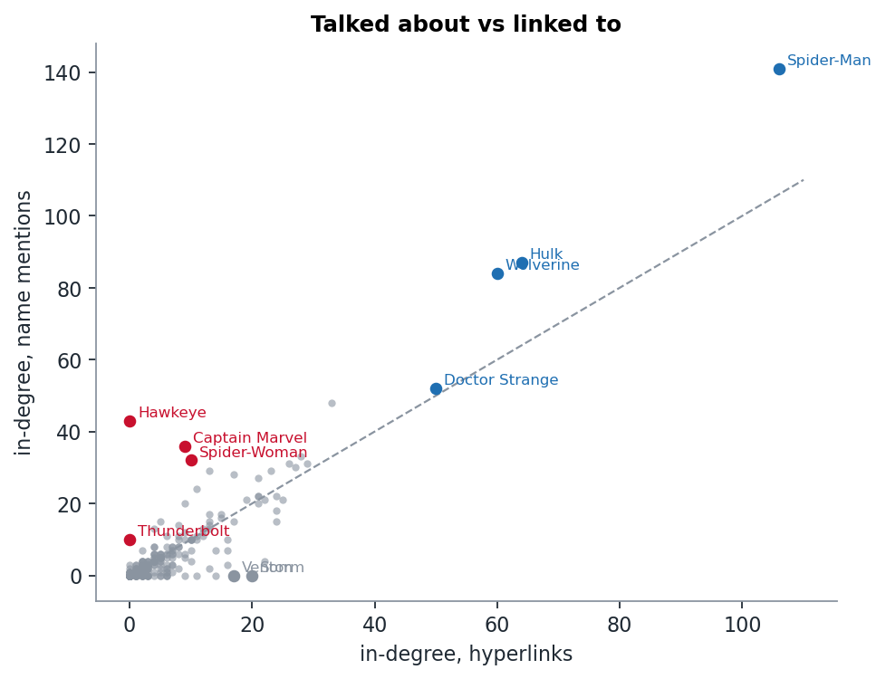

Week 7 · NLP III
Can text build the Marvel network?
We rebuilt the network from name mentions alone and got 77% of the hyperlinks back. The edges that exist in only one network come down to umbrella pages, comic-book titles and names that are also English words.
The question
The Marvel network was harvested from hyperlinks: an editor wrote [[Hulk]] into a page. But the text is right there too. If we ignored the links and only looked for characters named in each page, how close would we get to the hyperlink network? And where the two disagree, which one is wrong?
Building a mention network
For every character we built a list of aliases:
- the page title without its disambiguator (
Abomination (character)→ Abomination), - the real name from the node blurb (Emil Blonsky),
- or, for titles like Hawkeye (Kate Bishop), the name in the brackets.
Then we drew an edge A → B whenever one of B's aliases appears in A's text.
Getting the aliases right took three rounds, and each round changed the results a lot:
- Collisions. Our first version gave Spider-Man (Marvel Mangaverse) the alias "Spider-Man", so every mention of the real Spider-Man went to the manga version (142 phantom in-links). Fix: if two pages claim the same alias, it is ambiguous and goes to neither.
- Hyphens.
\bHulk\bmatches inside "She-Hulk", because a hyphen counts as a word boundary. We switched to(?<![\w-])Hulk(?![\w-]). - Ordinary words. Storm, Venom, Blade, Bug and Solo are also English words. We dropped any one-word alias that appears in lower case 5 or more times in the corpus. That costs us 13 characters (including Storm with 20 in-links and Venom with 17), which we cannot detect at all.
How close do we get?

| hyperlink edges | 1,784 |
| mention edges | 1,843 |
| in both | 1,369 |
| hyperlinks recovered by mentions | 77% |
| mentions that are also hyperlinks | 74% |
| Jaccard overlap | 0.61 |
| correlation of in-degrees | 0.91 |
So name mentions recover about three quarters of the network. A page that names someone once links them 70% of the time. A page that names someone 8 or more times links them more than 90% of the time.
Talked about, but not linked

The characters furthest above the diagonal show how the text and the links disagree:
| character | hyperlink in-degree | mention in-degree |
|---|---|---|
| Hawkeye | 0 | 43 |
| Captain Marvel | 9 | 36 |
| Spider-Woman | 10 | 32 |
| Thunderbolt | 0 | 10 |
All four are umbrella pages: "Hawkeye is the name of several fictional characters". When Mockingbird's page says she married Clint Barton/Hawkeye, the link goes to Clint Barton's own article, which is not in the category. The mention is correct. The hyperlink is also correct. They just point to different entities. This is the same codename effect as Quasar in week 5, from the other side: there, links piled up on a name; here, mentions do.
The grey dots on the x-axis (Storm, Venom, Blade…) are the reverse case: plenty of hyperlinks, zero mentions, because we had to give up on their aliases.
Mentions without links
We read the strongest text-only edges in context. They fall into three groups:
- Umbrella pages (as above): Mockingbird → Hawkeye (45 mentions), Black Widow → Hawkeye, Scarlet Witch → Hawkeye.
- Comic titles, not characters: Toro → Human Torch comes from "Human Torch Comics #2"; Agent X → Deadpool comes from "the long-running Deadpool series"; Spider-Woman (Jessica Drew) → Spider-Man comes from the film Spider-Man: Across the Spider-Verse.
- A different entity with the same name: Captain Universe → Enigma is about the cosmic "Enigma Force", not the character Enigma. Miracleman → Captain Marvel is about Fawcett's Captain Marvel, a different publisher's character that Miracleman was created to replace. A string match cannot tell them apart.
Links without mentions
Of the 415 hyperlinks that our mentions missed, 104 point to a character we could not give an alias. Most of the rest are characters referred to by a name we did not list, such as Mayday for Mayday Parker, or first names alone.
So, can text build the network?
For the big picture, yes. In-degrees correlate at 0.91, and the same hubs come out on top. For individual edges, not without a lot of work, and that work (deciding which string refers to which entity) is exactly the work Wikipedia editors already did when they wrote the links. The mention network is most useful as a check on the hyperlinks: it found the Hawkeye and Captain Marvel umbrella pages, which are invisible if you only look at links.
Limitation
Real names come from parsing the brackets in the node blurbs, and that is noisy: Thena's alias came out as "born Azura" and Chase Stein's as "also known as Talkback". A proper named-entity linker, or Wikidata aliases (we have the Wikidata IDs), would be the next step.